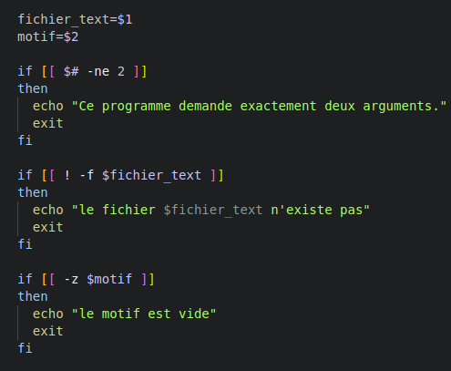
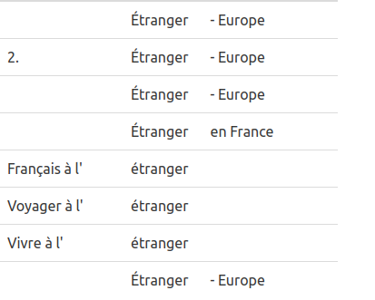

- scriptaspi.sh : le script qui permet de créer les aspirations des pages qui nous intéressaient. Lors de l'exécution de ce script, un autre script est exécuté en parallèle :
- concordance.sh qui permet de créer les concordances du motif recherché lors de l'exécution du script.
Extraction des données
Rédaction du script :

Nous avons réalisé 2 scripts différents pour la constitution de nos corpus. Ces scripts ont été réalisés durant les séances de cours et au fil de nos exercices personnels.
Ces deux scripts sont :
Ici, nous allons nous intéresser à la rédaction des deux premiers scripts. La création du script itrameurscript.sh est explicitée dans la partie iTrameur.
Rédaction des scripts :
Script final :
#!/usr/bin/env bash
#===============================================================================
# Ce script est notre programme pour traiter les URLs. Il permet de créer un tableau HTML en sortie avec chaque URL, le code de réponse correspondant .
# Il s'utilise dans le dossier avec le fichier à traiter <URL.txt> (avec un URL/ligne) avec la ligne de commande :
# bash traitement_url_base.sh <URL.txt> <tableauURL.html> "<motif recherché>"
#<tableauURL.html> est le fichier de sortie du tableau HTML (ici il n'existe pas avant le lancement du script).
#Il est nécéssaire d'avoir créer un dossier 'aspirations' dans le dossier d'utilisation du script.
#===============================================================================
# On attribue les fichiers en argument à des variables :
fichier_urls=$1 # le fichier d'URL en entrée
fichier_tableau=$2 # le fichier HTML en sortie
motif=$3 # le motif recherché
if [ $# -ne 3 ]
then
echo " Ce programme demande trois arguments."
exit
fi
# On vérifie que le fichier d'URLs existe :
if [ -f $1 ]
then
echo "Fichier OK"
else
echo "Ceci n'est pas un fichier valide."
exit
fi
echo $fichier_urls;
basename=$(basename -s .txt $fichier_urls)
# On crée l'architecture HTML du tableau de sortie dans le fichier donné en second argument :
#Déclaration de l'encodage et on associe Bulma pour la mise en forme CSS
echo "<!DOCTYPE html><html><head><meta charset="UTF-8" /><meta name="viewport" content="width=device-width, initial-scale=1">
<link rel="stylesheet" href="https://cdn.jsdelivr.net/npm/bulma@0.9.4/css/bulma.min.css" /></head><body>" > $fichier_tableau
echo "<h2>Tableau $basename :</h2>" >> $fichier_tableau
echo "<br/>" >> $fichier_tableau
echo "<table class="table is-striped is-narrow is-hoverable is-fullwidth">" >> $fichier_tableau
echo "<tr><th>ligne</th><th>code</th><th>URL</th><th>encodage</th><th>dump</th><th>text</th><th>N°Occ</th><th>contextes</th><th>concordances</th></tr>" >> $fichier_tableau
# On crée un compteur pour les URLs/le nombre de lignes :
lineno=1;
#
while read -r line;
do
# On récupère l'URL (=la ligne)
URL=$line
# On récupère le code :
CODEHTTP=$(curl -I -s $line | grep -e "^HTTP/" | grep -Eo "[0-9]{3}" | head -n1)
# On récupère l'encodage :
ENC=$(curl -I -s $line | grep -Eo "charset=[\w-]+"| cut -d= -f2)
# On récupère le contenu de la page HTML
aspiration=$(curl $URL)
# On met le contenu dans un document HTML dédié
echo "$aspiration" > "aspirations/$basename-$lineno.html"
# On affiche les informations importantes dans le terminal
#echo -e "\tURL : $URL";
echo -e "\tURL N°: $lineno";
echo -e "\tCode : $CODEHTTP";
# Si ENC n'existe pas :
if [[ ! $ENC ]]
then
# On définit l'encodage en UTF-8
echo -e "\tEncodage non détecté, on prend UTF-8 par défaut.";
ENC="UTF-8";
# Sinon on garde l'encodage détécté
else
echo -e "\tEncodage : $ENC";
fi
# Si le code est égal à 200 :
if [[ $CODEHTTP -eq 200 ]]
then
dump=$(lynx -dump -nolist -assume_charset=$ENC -display_charset=$ENC $URL)
if [[ $ENC -ne "UTF-8" && -n "$dump" ]]
# On vient convertir le fichier en UTF-8 grâce à iconv
then
dump=$(echo $dump | iconv -f $ENC -t UTF-8//IGNORE)
fi
# Si le code n'est pas 200, on ne récupère pas le contenu :
else
echo -e "\tCode différent de 200, utilisation d'un dump vide."
dump=""
ENC=""
fi
echo "$dump" > "./dumps-text/$basename-$lineno.txt"
count=$(egrep -o -E $motif ./dumps-text/$basename-$lineno.txt| wc -l)
contexte=$(echo "$dump"|grep -E -A2 -B2 $motif)
echo "$contexte" > "contextes/$basename-$lineno.txt"
bash concordance.sh ./dumps-text/$basename-$lineno.txt $motif > ./concordances/$basename-$lineno.html
echo "<tr><td>$lineno</td><td>$CODEHTTP</td><td><
a href=\"$URL\">$URL</a></td><td>$ENC</td><td><
a href="./aspirations/$basename-$lineno.html">html</a></td><td><
a href="./dumps-text/$basename-$lineno.txt">text</a></td><td>$count</td><td><
a href="./contextes/$basename-$lineno.txt">contextes</a></td><td><
a href="./concordances/$basename-$lineno.html">concordance</a></td></tr>" >> $fichier_tableau
lineno=$((lineno+1));
done < $fichier_urls
# On ferme le fichier HTML :
echo "</table></body></html>" >> $fichier_tableauDéveloppement
Notre but premier a été de réaliser un script permettant de traiter nos listes d'URLs. Ce script doit permettre non seulement d'aspirer les contenus des pages webs choisies mais aussi de réaliser des opérations de concordances (et de contextualisation si concordance il y a) mais aussi de collecter ces informations et de les ranger dans des tableau HTML ce qui permet son insertion dans notre site.
Pour ce faire nous avons utilisé tout un ensemble de commandes bash vues en cours.
Tout d'abord, nous avons téléchargé le script traitement_url_base.sh mis à notre disposition sur le Git du cours puis nous avons installé curl qui nous permet d'aspirer le contenu des pages web et de compléter ce script.
Lorsque nous cherchons à aspirer une page web, il est important de savoir si l'aspiration fonctionne. C'est ce sur quoi nous renseigne La commande curl nous a permis de récuperer l'entête de la reponse du serveur et donc de savoir si l'url etait valide ou non ! si c'est 200 c'est ok sinon non :c
Les entêtes qui nous ont interessées sont les suivantes :
- Le code HTTP
- Son encodage
Lorsque le contenu de la page URL n'est pas de l'UTF-8 nous sommes embêtées , en effet le traitement d'une page non UTF-8 peut poser des problèmes pour la lecture des accents. Il nous paraît egalement fastidieux de traiter des pages n'ayant pas le même encodage.
Pour eviter les problèmes nous le convertissons avec iconv pour n'avoir que de l'UTF-8.

Nos URLs vérifiées, nous voulons les stocker dans un tableau html afin d'avoir plus de visibilité et un recueil de données.

fermeture du tableau html avec l'intégralité des donnéees :
Après avoir traité nos URLs , nous avons pu passer à l'étape suivante: récupérer le contenu textuel de nos pages.
La commande Lynx nous permet de récuperer le contenu textuel d'une page
Le but de notre projet est d'analyser un ou plusieurs mots; ainsi nous avons commencé à nous soucier de ce mot. Nous avons ajouté un compteur permettant de compter le nombre d'occurences de nos mots dans les dumps

Pour stocker les aspirations, dumps, contextes nous avons crée des dossiers permettant de stocker ces données et également nécessaires au fonctionnement du script

Le traitement de l'url ne sera pas le même en fonction de son entête. En effet s'il renvoit le code 200 nous allons incrémenter son dump à une variable. A contrario si l'URL renvoie un autre code nous utiliserons un dump vide.
L' aspiration des pages et dumps textuels se font donc sur les URL ayant le code 200, ces données sont directement envoyées aux dossiers crées au préalable

Pour ajouter le contexte du motif inséré par l'utilisateur , nous nous sommes documentés sur la manuel de 'grep' nous pouvons voir que les options A et B suivies d'un chiffre permettent de trouver ce qu'il y a après le mot et avant " after, before" le chiffre permet de mentionner la longueur de contexte que nous voulons en ligne.
Script Concordance
Script en entier pour la concordance
#!/usr/bin/bash
fichier_text=$1
motif=$2
if [[ $# -ne 2 ]]
then
echo "Ce programme demande exactement deux arguments."
exit
fi
if [[ ! -f $fichier_text ]]
then
echo "le fichier $fichier_text n'existe pas"
exit
fi
if [[ -z $motif ]]
then
echo "le motif est vide"
exit
fi
echo "
<!DOCTYPE html><html><head><meta charset=UTF-8 /><meta name=viewport content=width=device-width, initial-scale=1>
<link rel=stylesheet href=https://cdn.jsdelivr.net/npm/bulma@0.9.4/css/bulma.min.css /></head><body>
<div class="table-container">
<table class="table is-striped is-narrow is-hoverable is-fullwidth">
<html lang=\"en\">
<head>
<meta charset=\"UTF-8\">
<title>Concordance</title>
</head>
<body>
<thead>
<tr>
<th class=\"has-text-right\">Contexte droit</th>
<th>Cible</th>
<th class=\"has-text-left\">Contexte gauche</th>
</tr>
</thead>
<tbody>
"
grep -E -o "(\w+\W+){0,5}\b$motif\b(\W+\w+){0,5}" $fichier_text | sed -E "s/(.*)($motif)(.*)/<tr><td>\1<\/td><td>\2<\/td><td>\3<\/td><\/tr>/"
echo "
</tbody>
</table>
</body>
</html>
"Développement
Suite à nos aspirations nous voulons créer un concordancier qui nous permettra de voir le contexte droit et gauche du motif.
Pour ce faire, nous utilisons la commande bash ci-dessous qui nous permet de lancer notre futur script de concordancier
Nous pouvons voir un fait intéressant dans la dernière partie de la commande :
Les données du script concordances seront envoyées dans un fichier nommé concordance. Il est donc primordial de créer ce dossier.

Ce script contiendra deux arguments , le premier est le fichier dump : c'est sur ce ficher que se produira l'analyse du contexte du motif, le deuxième argument est le motif utilisé sur le scriptaspi.
Pour éviter les problèmes nous mettons la condition d'avoir 2 arguments pour lancer le script. 
Nous voulons les résultats sous forme de tableaux. Pour cette raison dans le script concordance nous allons faire un tableau html.
Afin de mettre en forme le contexte droit et gauche nous utilisons la commande ci-dessous :
Avec la fonction grep nous captons le contexte gauche du motif à l'aide d'une expresion régulière (\w+\W+){0,5} de même pour le contexte droit.
Suite à cela nous avons le contexte droit et gauche. Maintenant il faut l'ajouter à notre tableau de manière ordonnée.
Maintenant intéressons nous à la deuxieme partie de la commande:
Nous mettons 3 élèment entre parenthèse.
Les parenthèses nous permettent de compléter notre tableau comme nous le voulons. En effet le contenu de la première partie peut être extrait en l'appelant 1, le deuxième élément qui est le motif sera deux , enfin la parenthèse se trouvant à sa gauche sera 3.
Nous répartissons ces chiffres dans les colonnes du tableau en sachant que 1 est le contexte gauche , 2 le motif puis 3 le contexte droit.
Une fois cela fait nous avons notre concordancier qui a cet aspect :
